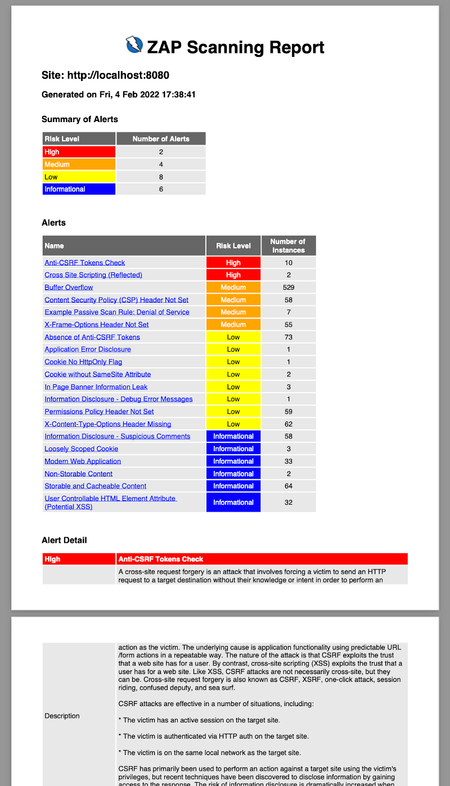

| Section | ID |
|---|---|
| Alert Count | alertcount |
| Insights | insights |
| Instance Count | instancecount |
| Alert Details | alertdetails |
| Script Diagnostics | scriptdiagnostics |
| Screenshots for Script Diagnostics | scriptdiagnosticsscreenshots |
| Output for Script Diagnostics | scriptdiagnosticsoutput |
